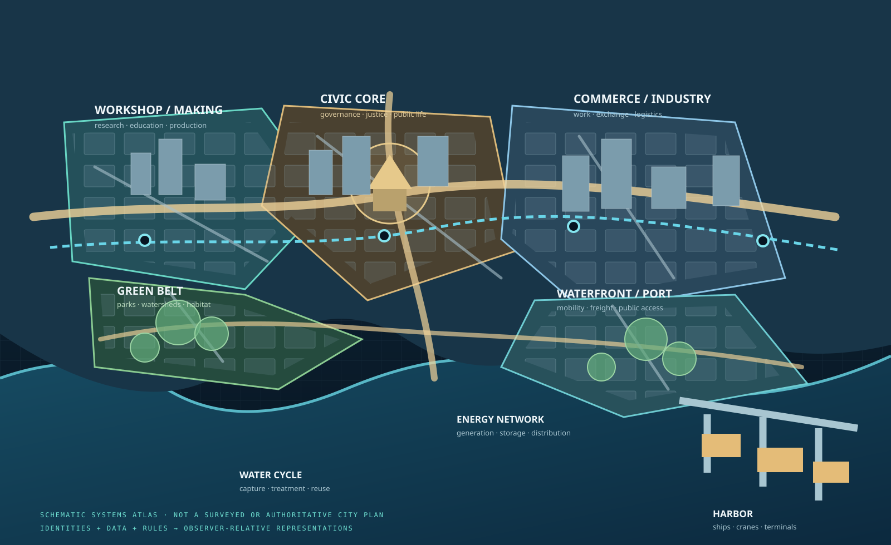

A city is more than
a place on a map.
Discover the places, people and experiences that connect the Workshop into one living world.
A living picture of civilization.
Streets and buildings are only the visible surface. Underneath are the networks, institutions, ecological cycles, economies and human relationships that make a city work.
Explore the civil systems and theory atlas ↗
OPEN SYSTEMS ATLAS ↗Every discipline has a place in the city.
One world model, many connected domains. Each layer can become an inspectable picture, an analytical instrument and eventually an executable system.
Systems dynamics · network science · urban morphology · land economics · commons theory · environmental justice · welfare economics · resilience theory
Open the theory syllabus ↗Singularity City
Districts & destinations
Every place has a purpose. Every entrance leads somewhere.
Every pixel has a source.
Select a place to inspect the repository and model data behind it.
One city.
Many experiences.
City provides the geography and the doorway. The experience beyond that doorway owns its own rules, simulation and history.
Build your own city, step by step ↗